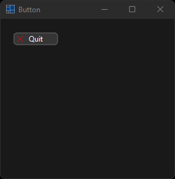
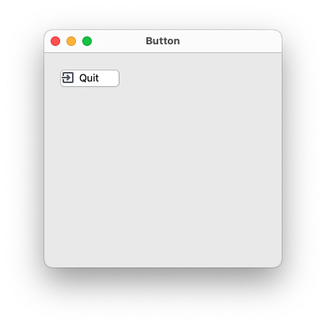
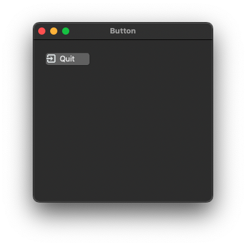
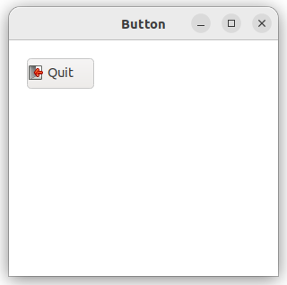
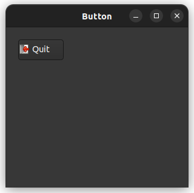

|
xtd
0.2.0
|
Loading...
Searching...
No Matches
tutorial_button.cpp
First we create the very basic xtd::forms program.
- Windows


- macOS
- 

- Gnome
- 

#include <xtd/xtd>
namespace tutorial {
public:
form_button() {
text("Button");
start_position(xtd::forms::form_start_position::center_screen);
active_control(button_quit);
button_quit.parent(*this);
button_quit.image_align(xtd::forms::content_alignment::middle_left);
button_quit.text("&Quit");
button_quit.location(xtd::drawing::point {20, 20});
button_quit.click += xtd::event_handler {*this, &form_button::on_quit};
}
static auto main() {
xtd::forms::application::run(form_button {});
}
private:
close();
}
xtd::forms::button button_quit;
};
}
startup_(tutorial::form_button::main);
Represents an ordered pair of integer x- and y-coordinates that defines a point in a two-dimensional ...
Definition point.h:54
Stores an ordered pair of integers, which specify a height and width.
Definition size.h:31
Represents the base class for classes that contain event data, and provides a value to use for events...
Definition event_args.h:18
static void run()
Begins running a standard application message loop on the current thread, without a form.
Represents a window or dialog box that makes up an application's user interface.
Definition form.h:52
static xtd::drawing::image from_name(const xtd::ustring &name)
Gets image object with specified name.
Definition images.h:1266
generic_event_handler<> event_handler
Represents the method that will handle an event that has no event data.
Definition event_handler.h:32
#define startup_(main_method)
Defines the entry point to be called when the application loads. Generally this is set either to the ...
Definition startup.h:162
@ center_screen
The form is centered on the current display, and has the dimensions specified in the form's size.
@ middle_left
Content is vertically aligned in the middle, and horizontally aligned on the left.
Generated on Sun Oct 1 2023 21:56:43 for xtd by Gammasoft. All rights reserved.